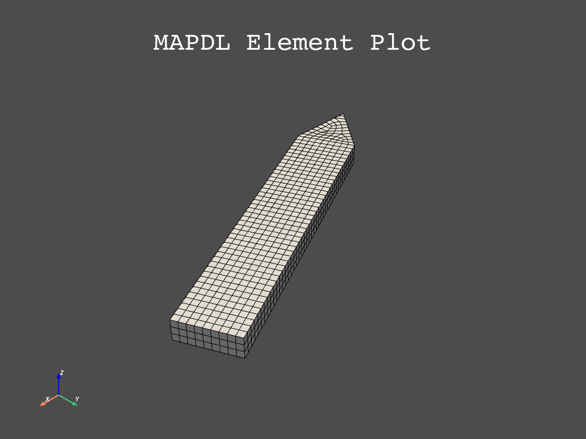

Note
Click here to download the full example code
Cyclic Analysis#
This example creates a bladed disc using parametric geometry of a cyclic sector and then runs a modal analysis on that cyclic sector. We then post-process the results using the legacy MAPDL reader and finally generate another cyclic model using our parametric modeler.
Our first task is to create a simple cyclic model with 7 sectors.

First, start MAPDL as a service.
# sphinx_gallery_thumbnail_number = 3
import numpy as np
import pyvista as pv
from ansys.mapdl.core import launch_mapdl
mapdl = launch_mapdl()
Create the Cyclic Sector#
Create a single “sector” of our cyclic model.
def gen_sector(mapdl, sectors):
"""Generate a single sector within MAPDL."""
# thickness
thickness = 0.003 # meters
arc_end = 2 * np.pi / sectors
arc_cent = arc_end / 2
# radius
rad = 0.01 # M
arc = pv.CircularArc(
[rad, 0, 0], [np.cos(arc_end) * rad, np.sin(arc_end) * rad, 0], [0, 0, 0]
)
# interior circle
kp_begin = [rad, 0, 0]
kp_end = [np.cos(arc_end) * rad, np.sin(arc_end) * rad, 0]
kp_center = [0, 0, 0]
# exterior circle in (M)
out_rad = 5.2e-2
# solve for angle to get same arc.length at the end
cent_ang = arc.length / out_rad / 2
# interior circle
kp_beg_outer = [
np.cos(arc_cent - cent_ang) * out_rad,
np.sin(arc_cent - cent_ang) * out_rad,
0,
]
kp_end_outer = [
np.cos(arc_cent + cent_ang) * out_rad,
np.sin(arc_cent + cent_ang) * out_rad,
0,
]
mapdl.prep7()
mapdl.k(0, *kp_center)
mapdl.k(0, *kp_begin)
mapdl.k(0, *kp_end)
mapdl.k(0, *kp_beg_outer)
mapdl.k(0, *kp_end_outer)
# inner arc
mapdl.l(1, 2) # left line
mapdl.l(1, 3) # right line
lnum_inter = mapdl.l(2, 3) # internal line
mapdl.al("all")
# outer "blade"
lnum = [lnum_inter, mapdl.l(4, 5), mapdl.l(2, 4), mapdl.l(3, 5)]
mapdl.al(*lnum)
# extrude the model in the Z direction by ``thickness``
mapdl.vext("all", dz=thickness)
# generate a single sector of a 7 sector model
sectors = 7
gen_sector(mapdl, sectors)
# Volume plot
mapdl.vplot()
Make the Model Cyclic#
Make the model cyclic by running Mapdl.cyclic()
Note how the number of sectors matches
output = mapdl.cyclic()
print(f"Expected Sectors: {sectors}")
print(output)
Expected Sectors: 7
USE EXISTING MODEL FOR CYCLIC SYMMETRY
******************************************************
****** COMPUTED QUANTITIES ***************************
******************************************************
* NUMBER OF SECTORS = 7 *
* SECTOR ANGLE = 51.429 *
* CYCLIC COORDINATE SYSTEM = 1 *
* EDGE COMPONENTS CONTAIN AREAS *
* LOW EDGE COMPONENT = CYCLIC_M01L MATCHED *
* HIGH EDGE COMPONENT = CYCLIC_M01H *
******************************************************
Generate the mesh#
Generate the finite element mesh using quadritic hexahedrals, SOLID186.
Apply Material Properties#
# Define a material (nominal steel in SI)
mapdl.mp("EX", 1, 210e9) # Elastic moduli in Pa (kg/(m*s**2))
mapdl.mp("DENS", 1, 7800) # Density in kg/m3
mapdl.mp("NUXY", 1, 0.3) # Poisson's Ratio
# apply it to all elements
mapdl.emodif("ALL", "MAT", 1)
MODIFY ALL SELECTED ELEMENTS TO HAVE MAT = 1
Run the Modal Analysis#
Let’s get the first 10 modes. Note that this will actually compute
(sectors/2)*nmode based on the cyclic boundary conditions.
output = mapdl.modal_analysis(nmode=10, freqb=1)
print(output)
*** NOTE *** CP = 47.765 TIME= 09:08:30
There is no title defined for this analysis.
*** WARNING *** CP = 47.782 TIME= 09:08:30
No constraints have been defined using the D command.
GENERATE CYCLIC SYMMETRY CONSTRAINT EQUATIONS
*** WARNING *** CP = 47.812 TIME= 09:08:30
There is no high edge node in a position to match low edge node 2515
(location error = 4.55E-04, maximum for all nodes). Cyclic symmetry
constraint equations will be generated between the sector edges using
a mapping procedure similar to the CEINTF command. This may reduce
solution accuracy, especially near the sector edges.
NUMBER OF CONSTRAINT EQUATIONS GENERATED= 363
(USING THE UNMATCHED NODES ALGORITHM)
***** MAPDL SOLVE COMMAND *****
*** SELECTION OF ELEMENT TECHNOLOGIES FOR APPLICABLE ELEMENTS ***
---GIVE SUGGESTIONS ONLY---
ELEMENT TYPE 1 IS SOLID186. KEYOPT(2) IS ALREADY SET AS SUGGESTED.
*** MAPDL - ENGINEERING ANALYSIS SYSTEM RELEASE 22.2 ***
Ansys Mechanical Enterprise
00000000 VERSION=LINUX x64 09:08:30 DEC 08, 2022 CP= 47.844
S O L U T I O N O P T I O N S
PROBLEM DIMENSIONALITY. . . . . . . . . . . . .3-D
CYCLIC SYMMETRY SECTOR ANGLE. . . . . . . . . . 51.429 DEGREES
DEGREES OF FREEDOM. . . . . . UX UY UZ
ANALYSIS TYPE . . . . . . . . . . . . . . . . .MODAL
EXTRACTION METHOD. . . . . . . . . . . . . .BLOCK LANCZOS
NUMBER OF MODES TO EXTRACT. . . . . . . . . . . 10
USE CYCLIC MODES IN SUBSEQUENT MSUP ANALYSIS. .YES
SHIFT POINT . . . . . . . . . . . . . . . . . . 1.0000
GLOBALLY ASSEMBLED MATRIX . . . . . . . . . . .SYMMETRIC
NUMBER OF MODES TO EXPAND . . . . . . . . . . . 10
ELEMENT RESULTS CALCULATION . . . . . . . . . .OFF
*** NOTE *** CP = 47.850 TIME= 09:08:30
The conditions for direct assembly have been met. No .emat or .erot
files will be produced.
L O A D S T E P O P T I O N S
LOAD STEP NUMBER. . . . . . . . . . . . . . . . 1
CYCLIC SYMMETRY HARMONIC INDEX. . . . . . . . . 0
THERMAL STRAINS INCLUDED IN THE LOAD VECTOR . . YES
PRINT OUTPUT CONTROLS . . . . . . . . . . . . .NO PRINTOUT
DATABASE OUTPUT CONTROLS. . . . . . . . . . . .ALL DATA WRITTEN
**** CENTER OF MASS, MASS, AND MASS MOMENTS OF INERTIA ****
CALCULATIONS ASSUME ELEMENT MASS AT ELEMENT CENTROID
TOTAL MASS = 0.19205E-01
MOM. OF INERTIA MOM. OF INERTIA
CENTER OF MASS ABOUT ORIGIN ABOUT CENTER OF MASS
XC = 0.25304E-01 IXX = 0.3686E-05 IXX = 0.7910E-06
YC = 0.12186E-01 IYY = 0.1533E-04 IYY = 0.2994E-05
ZC = 0.15000E-02 IZZ = 0.1891E-04 IZZ = 0.3759E-05
IXY = -0.7303E-05 IXY = -0.1381E-05
IYZ = -0.3510E-06 IYZ = 0.1421E-19
IZX = -0.7290E-06 IZX = 0.2680E-19
*** MASS SUMMARY BY ELEMENT TYPE ***
TYPE MASS
1 0.192050E-01
Range of element maximum matrix coefficients in global coordinates
Maximum = 266915922 at element 2609.
Minimum = 162779585 at element 2500.
*** ELEMENT MATRIX FORMULATION TIMES
TYPE NUMBER ENAME TOTAL CP AVE CP
1 2628 SOLID186 0.807 0.000307
Time at end of element matrix formulation CP = 48.4409904.
BLOCK LANCZOS CALCULATION OF UP TO 10 EIGENVECTORS.
NUMBER OF EQUATIONS = 21235
MAXIMUM WAVEFRONT = 297
MAXIMUM MODES STORED = 10
MINIMUM EIGENVALUE = 0.10000E+01
MAXIMUM EIGENVALUE = 0.10000E+31
Memory allocated for solver = 120.824 MB
Memory required for in-core solution = 115.150 MB
Memory required for out-of-core solution = 43.305 MB
*** NOTE *** CP = 49.700 TIME= 09:08:31
The Sparse Matrix Solver used by the Block Lanczos eigensolver is
currently running in the in-core memory mode. This memory mode uses
the most amount of memory in order to avoid using the hard drive as
much as possible, which most often results in the fastest solution
time. This mode is recommended if enough physical memory is present
to accommodate all of the solver data.
Process memory required for in-core LANCZOS Workspace = 82.136147 MB
Process memory required for out-of-core LANCZOS Workspace = 2.427132 MB
*** MAPDL - ENGINEERING ANALYSIS SYSTEM RELEASE 22.2 ***
Ansys Mechanical Enterprise
00000000 VERSION=LINUX x64 09:08:32 DEC 08, 2022 CP= 50.876
*** FREQUENCIES FROM BLOCK LANCZOS ITERATION ***
MODE FREQUENCY (HERTZ)
FREQUENCY RANGE REQUESTED= 10 MODES ABOVE 1.00000 HERTZ
1 1754.791682794
2 9255.393200982
3 10975.87832890
4 11515.67511202
5 21840.50673762
6 26925.16408894
7 33190.75789137
8 34449.58549610
9 38317.00874885
10 56181.40862705
***** PARTICIPATION FACTOR AND MODAL MASS CALCULATION ***** HARMONIC INDEX= 0
GLOBAL GLOBAL PARTICIPATION
MODE FREQUENCY DIRECTION FACTOR EFFECTIVE MASS MODAL MASS
1 1754.79 UZ 0.79777E-10 0.63643E-20 7.0000
ROTZ -0.13828E-12 0.19122E-25
2 9255.39 UZ -0.22433E-08 0.50325E-17 7.0000
ROTZ -0.33339E-10 0.11115E-20
3 10975.9 UZ -0.58091E-08 0.33746E-16 7.0000
ROTZ 0.25358E-10 0.64301E-21
4 11515.7 UZ 0.21406E-08 0.45822E-17 7.0000
ROTZ -0.62178E-11 0.38661E-22
5 21840.5 UZ 0.12821E-09 0.16439E-19 7.0000
ROTZ 0.13274E-11 0.17620E-23
6 26925.2 UZ 0.12996E-08 0.16890E-17 7.0000
ROTZ -0.34054E-11 0.11597E-22
7 33190.8 UZ -0.78704E-09 0.61943E-18 7.0000
ROTZ 0.50537E-11 0.25540E-22
8 34449.6 UZ -0.20094E-09 0.40378E-19 7.0000
ROTZ -0.34644E-12 0.12002E-24
9 38317.0 UZ -0.40289E-09 0.16232E-18 7.0000
ROTZ 0.29971E-11 0.89823E-23
10 56181.4 UZ -0.15411E-09 0.23750E-19 7.0000
ROTZ 0.10844E-11 0.11759E-23
*** MAPDL BINARY FILE STATISTICS
BUFFER SIZE USED= 16384
32.312 MB WRITTEN ON ASSEMBLED MATRIX FILE: file.full
2.062 MB WRITTEN ON MODAL MATRIX FILE: file.mode
1.125 MB WRITTEN ON RESULTS FILE: file.rst
GENERATE CYCLIC SYMMETRY CONSTRAINT EQUATIONS
NUMBER OF CONSTRAINT EQUATIONS GENERATED= 740
(USING THE UNMATCHED NODES ALGORITHM)
***** MAPDL SOLVE COMMAND *****
*** MAPDL - ENGINEERING ANALYSIS SYSTEM RELEASE 22.2 ***
Ansys Mechanical Enterprise
00000000 VERSION=LINUX x64 09:08:32 DEC 08, 2022 CP= 51.035
L O A D S T E P O P T I O N S
LOAD STEP NUMBER. . . . . . . . . . . . . . . . 2
CYCLIC SYMMETRY HARMONIC INDEX. . . . . . . . . 1
THERMAL STRAINS INCLUDED IN THE LOAD VECTOR . . YES
PRINT OUTPUT CONTROLS . . . . . . . . . . . . .NO PRINTOUT
DATABASE OUTPUT CONTROLS. . . . . . . . . . . .ALL DATA WRITTEN
BLOCK LANCZOS CALCULATION OF UP TO 10 EIGENVECTORS.
NUMBER OF EQUATIONS = 42470
MAXIMUM WAVEFRONT = 384
MAXIMUM MODES STORED = 10
MINIMUM EIGENVALUE = 0.10000E+01
MAXIMUM EIGENVALUE = 0.10000E+31
Memory allocated for solver = 260.334 MB
Memory required for in-core solution = 248.099 MB
Memory required for out-of-core solution = 86.160 MB
*** NOTE *** CP = 53.280 TIME= 09:08:34
The Sparse Matrix Solver used by the Block Lanczos eigensolver is
currently running in the in-core memory mode. This memory mode uses
the most amount of memory in order to avoid using the hard drive as
much as possible, which most often results in the fastest solution
time. This mode is recommended if enough physical memory is present
to accommodate all of the solver data.
*** WARNING *** CP = 54.400 TIME= 09:08:34
The eigenproblem is ill-conditioned (relative residual from test linear
solve: 1.033772E-03). The accuracy of the solution may not be
satisfactory. Modifying the initial value of the frequency shift
(FREQB in the MODOPT command) or changing the boundary conditions of
the model might solve the problem.
Process memory required for in-core LANCZOS Workspace = 163.789284 MB
Process memory required for out-of-core LANCZOS Workspace = 4.371254 MB
*** MAPDL - ENGINEERING ANALYSIS SYSTEM RELEASE 22.2 ***
Ansys Mechanical Enterprise
00000000 VERSION=LINUX x64 09:08:35 DEC 08, 2022 CP= 55.981
*** FREQUENCIES FROM BLOCK LANCZOS ITERATION ***
MODE FREQUENCY (HERTZ)
FREQUENCY RANGE REQUESTED= 10 MODES ABOVE 1.00000 HERTZ
1 4016.683038839
2 4016.683040182
3 4064.737840458
4 4064.737844254
5 10313.66921341
6 10313.66934669
7 14213.07126346
8 14213.07139925
9 19293.02904131
10 19293.02907568
***** PARTICIPATION FACTOR AND MODAL MASS CALCULATION ***** HARMONIC INDEX= 1
GLOBAL GLOBAL PARTICIPATION
MODE FREQUENCY DIRECTION FACTOR EFFECTIVE MASS MODAL MASS
11 4016.68 UX 0.12726E-05 0.16195E-11 3.5000
UY 0.12819E-05 0.16433E-11
ROTX 0.97524E-04 0.95109E-08
ROTY -0.13938E-03 0.19426E-07
12 4016.68 UX -0.24265E-05 0.58877E-11 3.5000
UY -0.24203E-05 0.58578E-11
ROTX -0.13938E-03 0.19426E-07
ROTY -0.97533E-04 0.95127E-08
13 4064.74 UX -0.71538E-01 0.51177E-02 3.5000
UY 0.95342E-01 0.90901E-02
ROTX -0.14302E-03 0.20456E-07
ROTY -0.10730E-03 0.11512E-07
14 4064.74 UX 0.95337E-01 0.90891E-02 3.5000
UY 0.71557E-01 0.51204E-02
ROTX -0.10734E-03 0.11522E-07
ROTY 0.14301E-03 0.20453E-07
15 10313.7 UX 0.15180E-05 0.23042E-11 3.5000
UY 0.15178E-05 0.23037E-11
ROTX 0.52392E-03 0.27449E-06
ROTY -0.12711E-03 0.16157E-07
16 10313.7 UX 0.55748E-06 0.31078E-12 3.5000
UY 0.55727E-06 0.31055E-12
ROTX 0.12711E-03 0.16157E-07
ROTY 0.52393E-03 0.27450E-06
17 14213.1 UX 0.10293E-05 0.10594E-11 3.5000
UY 0.10302E-05 0.10613E-11
ROTX -0.26107E-04 0.68159E-09
ROTY -0.17566E-03 0.30858E-07
18 14213.1 UX -0.41277E-05 0.17038E-10 3.5000
UY -0.41282E-05 0.17042E-10
ROTX 0.17568E-03 0.30863E-07
ROTY -0.26115E-04 0.68200E-09
19 19293.0 UX 0.93729E-01 0.87851E-02 3.5000
UY 0.18656E-01 0.34805E-03
ROTX -0.27985E-04 0.78316E-09
ROTY 0.14059E-03 0.19767E-07
20 19293.0 UX 0.18647E-01 0.34772E-03 3.5000
UY -0.93736E-01 0.87865E-02
ROTX 0.14061E-03 0.19772E-07
ROTY 0.27963E-04 0.78191E-09
GENERATE CYCLIC SYMMETRY CONSTRAINT EQUATIONS
NUMBER OF CONSTRAINT EQUATIONS GENERATED= 726
(USING THE UNMATCHED NODES ALGORITHM)
***** MAPDL SOLVE COMMAND *****
*** MAPDL - ENGINEERING ANALYSIS SYSTEM RELEASE 22.2 ***
Ansys Mechanical Enterprise
00000000 VERSION=LINUX x64 09:08:35 DEC 08, 2022 CP= 56.119
L O A D S T E P O P T I O N S
LOAD STEP NUMBER. . . . . . . . . . . . . . . . 3
CYCLIC SYMMETRY HARMONIC INDEX. . . . . . . . . 2
THERMAL STRAINS INCLUDED IN THE LOAD VECTOR . . YES
PRINT OUTPUT CONTROLS . . . . . . . . . . . . .NO PRINTOUT
DATABASE OUTPUT CONTROLS. . . . . . . . . . . .ALL DATA WRITTEN
BLOCK LANCZOS CALCULATION OF UP TO 10 EIGENVECTORS.
NUMBER OF EQUATIONS = 42456
MAXIMUM WAVEFRONT = 384
MAXIMUM MODES STORED = 10
MINIMUM EIGENVALUE = 0.10000E+01
MAXIMUM EIGENVALUE = 0.10000E+31
Memory allocated for solver = 262.569 MB
Memory required for in-core solution = 250.227 MB
Memory required for out-of-core solution = 87.450 MB
*** NOTE *** CP = 58.408 TIME= 09:08:37
The Sparse Matrix Solver used by the Block Lanczos eigensolver is
currently running in the in-core memory mode. This memory mode uses
the most amount of memory in order to avoid using the hard drive as
much as possible, which most often results in the fastest solution
time. This mode is recommended if enough physical memory is present
to accommodate all of the solver data.
Process memory required for in-core LANCZOS Workspace = 163.735451 MB
Process memory required for out-of-core LANCZOS Workspace = 4.369972 MB
*** MAPDL - ENGINEERING ANALYSIS SYSTEM RELEASE 22.2 ***
Ansys Mechanical Enterprise
00000000 VERSION=LINUX x64 09:08:38 DEC 08, 2022 CP= 60.734
*** FREQUENCIES FROM BLOCK LANCZOS ITERATION ***
MODE FREQUENCY (HERTZ)
FREQUENCY RANGE REQUESTED= 10 MODES ABOVE 1.00000 HERTZ
1 1057.627660262
2 1057.627660279
3 3380.551787121
4 3380.551787123
5 6319.916392199
6 6319.916392208
7 10091.69582739
8 10091.69582740
9 18041.48697678
10 18041.48697678
***** MODAL MASS CALCULATION ***** HARMONIC INDEX= 2
MODE FREQUENCY MODAL MASS
21 1057.63 3.5000
22 1057.63 3.5000
23 3380.55 3.5000
24 3380.55 3.5000
25 6319.92 3.5000
26 6319.92 3.5000
27 10091.7 3.5000
28 10091.7 3.5000
29 18041.5 3.5000
30 18041.5 3.5000
GENERATE CYCLIC SYMMETRY CONSTRAINT EQUATIONS
NUMBER OF CONSTRAINT EQUATIONS GENERATED= 726
(USING THE UNMATCHED NODES ALGORITHM)
***** MAPDL SOLVE COMMAND *****
*** MAPDL - ENGINEERING ANALYSIS SYSTEM RELEASE 22.2 ***
Ansys Mechanical Enterprise
00000000 VERSION=LINUX x64 09:08:38 DEC 08, 2022 CP= 60.799
L O A D S T E P O P T I O N S
LOAD STEP NUMBER. . . . . . . . . . . . . . . . 4
CYCLIC SYMMETRY HARMONIC INDEX. . . . . . . . . 3
THERMAL STRAINS INCLUDED IN THE LOAD VECTOR . . YES
PRINT OUTPUT CONTROLS . . . . . . . . . . . . .NO PRINTOUT
DATABASE OUTPUT CONTROLS. . . . . . . . . . . .ALL DATA WRITTEN
BLOCK LANCZOS CALCULATION OF UP TO 10 EIGENVECTORS.
NUMBER OF EQUATIONS = 42456
MAXIMUM WAVEFRONT = 384
MAXIMUM MODES STORED = 10
MINIMUM EIGENVALUE = 0.10000E+01
MAXIMUM EIGENVALUE = 0.10000E+31
Memory allocated for solver = 262.569 MB
Memory required for in-core solution = 250.227 MB
Memory required for out-of-core solution = 87.450 MB
*** NOTE *** CP = 63.053 TIME= 09:08:40
The Sparse Matrix Solver used by the Block Lanczos eigensolver is
currently running in the in-core memory mode. This memory mode uses
the most amount of memory in order to avoid using the hard drive as
much as possible, which most often results in the fastest solution
time. This mode is recommended if enough physical memory is present
to accommodate all of the solver data.
Process memory required for in-core LANCZOS Workspace = 163.735451 MB
Process memory required for out-of-core LANCZOS Workspace = 4.369972 MB
*** MAPDL - ENGINEERING ANALYSIS SYSTEM RELEASE 22.2 ***
Ansys Mechanical Enterprise
00000000 VERSION=LINUX x64 09:08:41 DEC 08, 2022 CP= 65.354
*** FREQUENCIES FROM BLOCK LANCZOS ITERATION ***
MODE FREQUENCY (HERTZ)
FREQUENCY RANGE REQUESTED= 10 MODES ABOVE 1.00000 HERTZ
1 1193.652629340
2 1193.652629359
3 3319.553821209
4 3319.553821211
5 7336.402568777
6 7336.402568784
7 9979.988874667
8 9979.988874670
9 19188.49510780
10 19188.49510780
***** MODAL MASS CALCULATION ***** HARMONIC INDEX= 3
MODE FREQUENCY MODAL MASS
31 1193.65 3.5000
32 1193.65 3.5000
33 3319.55 3.5000
34 3319.55 3.5000
35 7336.40 3.5000
36 7336.40 3.5000
37 9979.99 3.5000
38 9979.99 3.5000
39 19188.5 3.5000
40 19188.5 3.5000
Get the Results of the Cyclic Modal Analysis#
Visualize a traveling wave from the modal analysis.
For more details, see Validation of a Modal Work Approach for Forced Response Analysis of Bladed Disks, or the Cyclic Symmetry Analysis Guide
Note
This uses the legacy result reader, which will be deprecated at some point in favor of DPF, but we can use this for now for some great animations.
For more details regarding cyclic result post processing, see: - Understanding Nodal Diameters from a Cyclic Model Analysis - Modal Cyclic Symmetry Example
# grab the result object from MAPDL
result = mapdl.result
print(result)
PyMAPDL Result
Units : User Defined
Version : 22.2
Cyclic : True
Result Sets : 40
Nodes : 7204
Elements : 1314
Available Results:
NSL : Nodal displacements
List the Table of Harmonic Indices#
This is the table of harmonic indices. This table provides the corresponding harmonic index for each cumulative mode.
C. Index Harmonic Index
0 0
1 0
2 0
3 0
4 0
5 0
6 0
7 0
8 0
9 0
10 1
11 -1
12 1
13 -1
14 -1
15 1
16 -1
17 1
18 1
19 -1
20 2
21 -2
22 2
23 -2
24 -2
25 2
26 2
27 -2
28 -2
29 2
30 3
31 -3
32 3
33 -3
34 -3
35 3
36 3
37 -3
38 -3
39 3
Generate an Animation of a Traveling Wave#
Here’s the nodal diameter 1 of first bend on our cyclic analysis.
We can get the first mode (generally first bend for a bladed rotor) for nodal diameter 1 with:
mode_num = np.nonzero(result.harmonic_indices == 1)[0][0]
pv.global_theme.background = "w"
_ = result.animate_nodal_displacement(
11,
displacement_factor=5e-4,
movie_filename="traveling_wave11.gif",
n_frames=30,
off_screen=True,
loop=False,
add_text=False,
show_scalar_bar=False,
cmap="jet",
)
And here’s 1st torsional for nodal diameter 3.
_ = result.animate_nodal_displacement(
36,
displacement_factor=2e-4,
movie_filename="traveling_wave36.gif",
n_frames=30,
off_screen=True,
loop=False,
add_text=False,
show_scalar_bar=False,
cmap="jet",
)
Parametric Geometry#
Since our geometry creation is scripted, we can create a structure with any number of “sectors”. Let’s make a more interesting one with 20 sectors.
First, be sure to clear MAPDL so we start from scratch.
mapdl.clear()
mapdl.prep7()
# Generate a single sector of a 20 sector model
gen_sector(mapdl, 20)
# make it cyclic
mapdl.cyclic()
# Mesh it
esize = 0.001
mapdl.et(1, 186)
mapdl.esize(esize)
mapdl.vsweep("all")
# apply materials
mapdl.mp("EX", 1, 210e9) # Elastic moduli in Pa (kg/(m*s**2))
mapdl.mp("DENS", 1, 7800) # Density in kg/m3
mapdl.mp("NUXY", 1, 0.3) # Poisson's Ratio
mapdl.emodif("ALL", "MAT", 1)
# Run the modal analysis
output = mapdl.modal_analysis(nmode=6, freqb=1)
# grab the result object from MAPDL
result = mapdl.result
print(result)
PyMAPDL Result
Units : User Defined
Version : 22.2
Cyclic : True
Result Sets : 66
Nodes : 3496
Elements : 579
Available Results:
NSL : Nodal displacements
List the Table of Harmonic Indices#
Note how the harmonic indices of these modes goes up to 10, or N/2 where N is the number of sectors.
C. Index Harmonic Index
0 0
1 0
2 0
3 0
4 0
5 0
6 -1
7 1
8 -1
9 1
10 -1
11 1
12 2
13 -2
14 2
15 -2
16 2
17 -2
18 3
19 -3
20 3
21 -3
22 3
23 -3
24 4
25 -4
26 4
27 -4
28 4
29 -4
30 -5
31 5
32 -5
33 5
34 -5
35 5
36 6
37 -6
38 6
39 -6
40 6
41 -6
42 7
43 -7
44 7
45 -7
46 7
47 -7
48 8
49 -8
50 8
51 -8
52 8
53 -8
54 9
55 -9
56 9
57 -9
58 9
59 -9
60 10
61 10
62 10
63 10
64 10
65 10
Plot First Bend for Nodal Diameter 2#
Note how you can clearly see two nodal lines for this mode shape since it’s nodal diameter 2.
result.plot_nodal_displacement(
12, cpos="xy", cmap="jet", show_scalar_bar=False, add_text=False
)
Animate First Bend for Nodal Diameter 2#
Let’s end this example by animating mode 12, which corresponds to first bend for the 2nd nodal diameter of this example model.
_ = result.animate_nodal_displacement(
12,
displacement_factor=2e-4,
movie_filename="traveling_wave12.gif",
n_frames=30,
off_screen=True,
loop=False,
add_text=False,
show_scalar_bar=False,
cmap="jet",
)
Total running time of the script: ( 0 minutes 44.365 seconds)